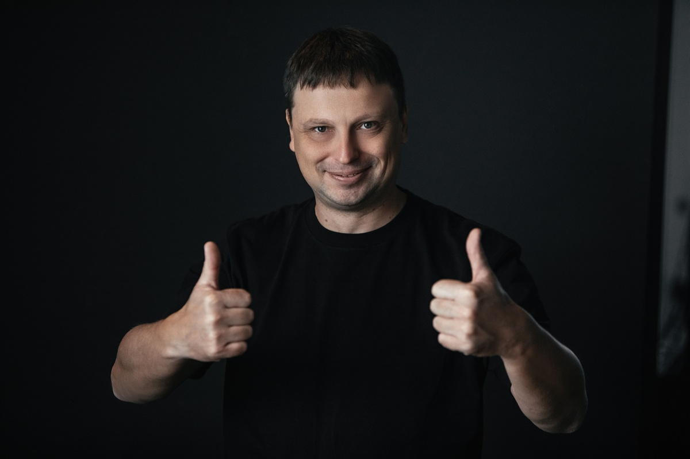
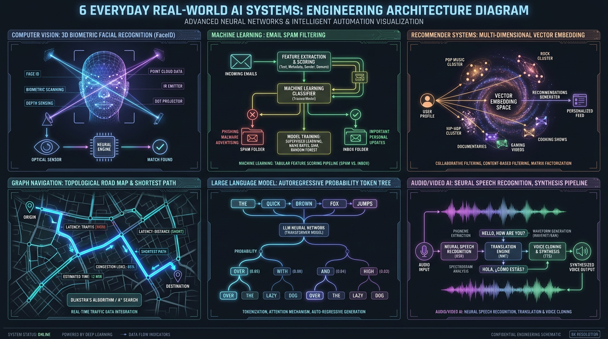
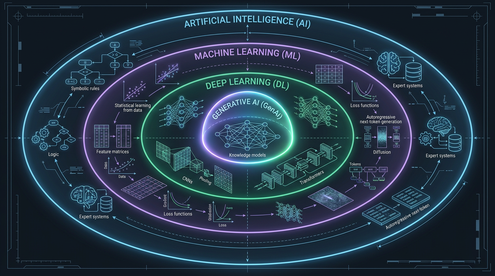
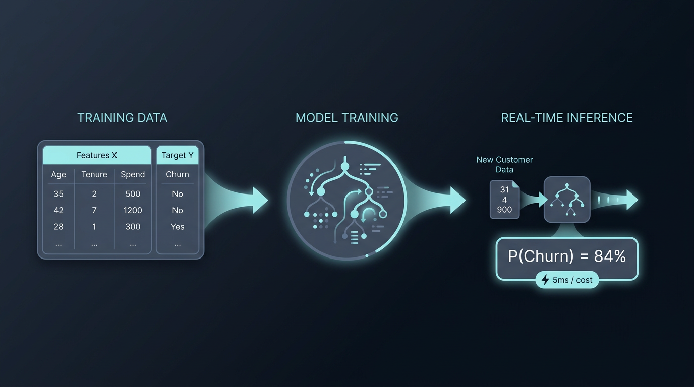
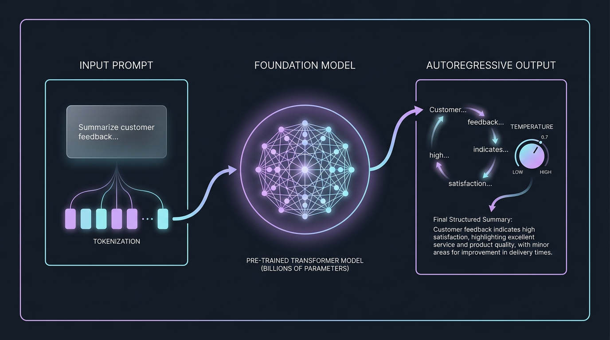
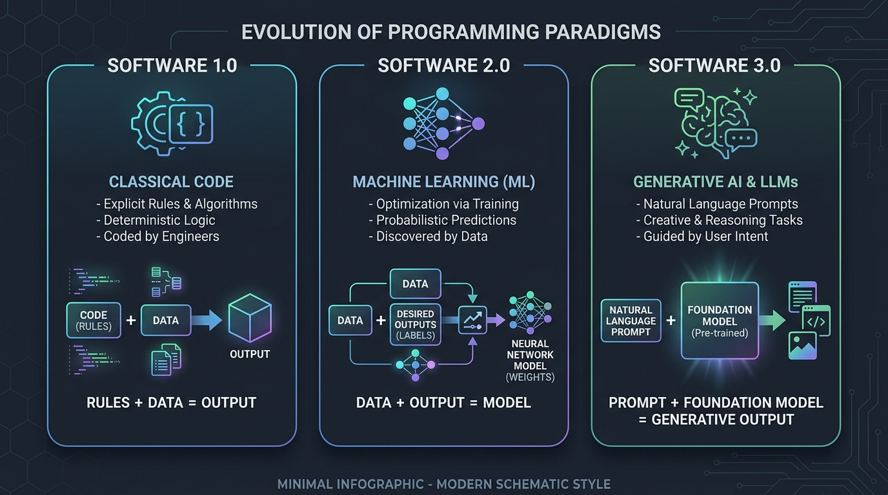
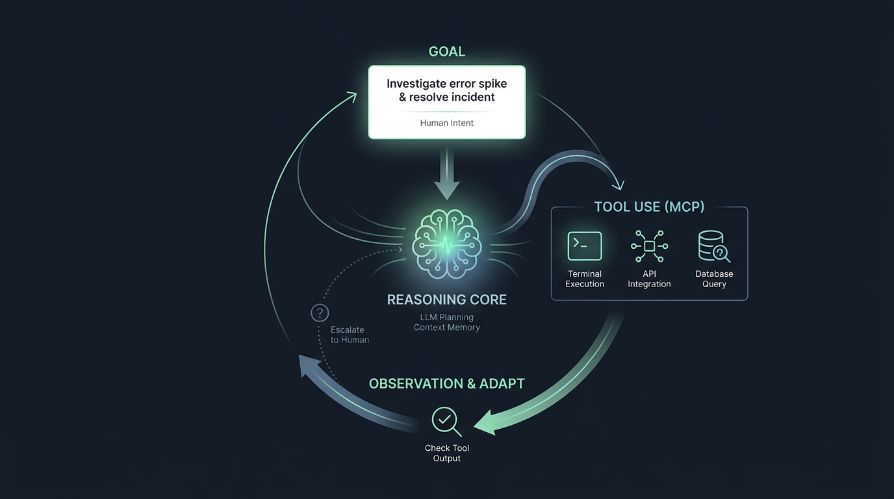
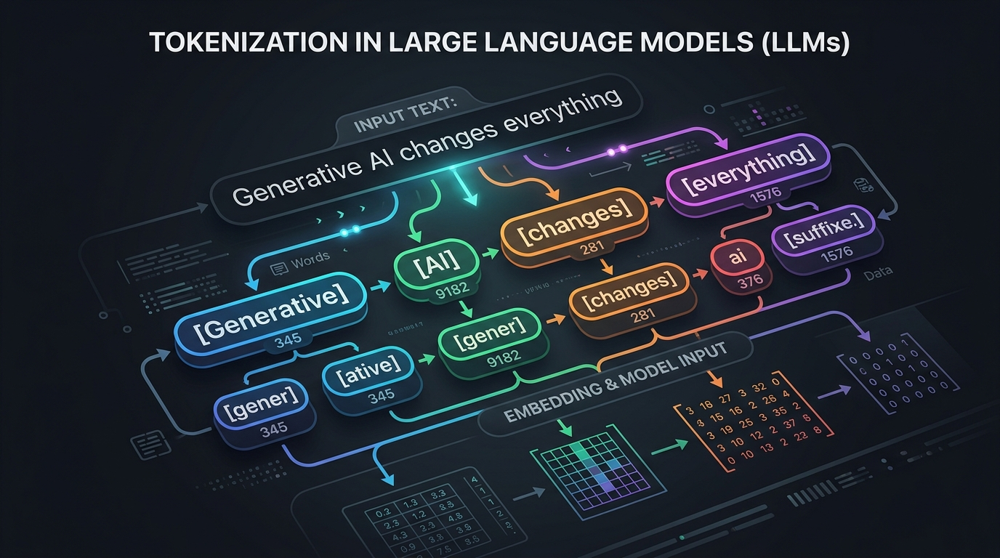
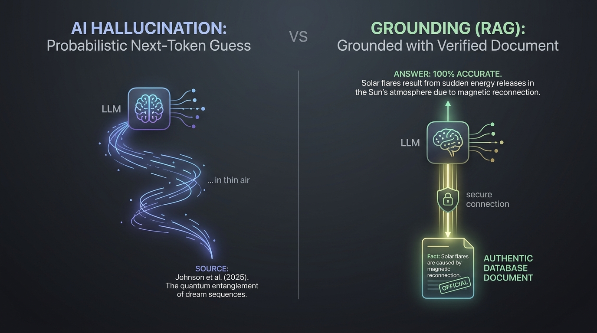

AI, ML и Generative AI
Инженерные ментальные модели, архитектура систем и продакшн-реалии
Отделяем алгоритмический детерминизм от вероятностной физики больших языковых моделей. Системное руководство по проектированию и внедрению надежных AI-решений в enterprise-разработке.
Остальные 90% — контракты, валидация, безопасность и инфраструктура»
Игорь Рубанович (Ihar Rubanovich)
Engineering Manager II & AI Ambassador в EPAM Systems. Эксперт по внедрению системного AI-Assisted Engineering.

Что мы изучим на курсе GenAI Basics
Шесть прикладных инженерных модулей — от базовых вызовов API до мультимодальности, открытых моделей и автономных агентов:
• L02: Токены, контекст, эмбеддинги, RAG
• L03: Python SDK, Streaming, Pydantic JSON
• L05: Видеомодели (Kling, Runway, Sora)
• L06: Голос, Whisper STT & ElevenLabs TTS
• L08: AI для аналитики и Code Interpreter
• L09: Claude экосистема, артефакты, проекты
Llama, Mistral, DeepSeek, Ollama, LM Studio, RunPod GPU
• L12: Протокол Model Context Protocol (MCP)
• L13: Responses API, Assistants v2, Agents SDK
• L15: Безопасность, Prompt Injection, PII
• L16: Coding Agents в IDE (Cursor, Antigravity)
Организация домашних заданий: GitHub-репозиторий
Все практические задания сдаются строго в виде структурированного репозитория на GitHub.
genai-homeworks/ ├── README.md # Общее оглавление и ссылки на ДЗ │ ├── L01/ # Урок 01 │ └── README.md # ДЗ 1: AI Use-Case Memo (.md) │ ├── L02/ # Урок 02 │ └── README.md # ДЗ 2: Анализ токенов и промптинга │ ├── L03/ # Урок 03 │ ├── solution.py # Код Python (Pydantic / Streaming) │ ├── requirements.txt # Зависимости │ └── README.md # Описание запуска │ └── ... # Последующие модули (L04 - L16)
Создайте репозиторий
genai-homeworks (Public или Private на ваш выбор).
Settings ➔ Collaborators ➔ Add people:Ссылка на репозиторий или PR отправляется в учебный трекер курса. Каждое задание получает архитектурный фидбек.
Введение в AI: где технологии окружают нас каждый день
Шесть реальных систем — от FaceID и спам-фильтра до рекомендаций и языковых моделей:

Таксономия: как соотносятся AI, ML, DL и GenAI
Строгая архитектурная матрешка: от общего понятия интеллекта к современным генеративным моделям:

Классический Machine Learning: Архитектура и свойства
Обучение на размеченных исторических таблицах и мгновенный инференс вероятностей:

Generative AI: Архитектура больших языковых моделей
Предобученное ядро трансформера и авторегрессионный синтез нового контента токен за токеном:

Эволюция кода: Software 1.0 ➔ 2.0 ➔ 3.0
Как изменился способ заставлять компьютеры решать задачи за последние 20 лет:

Ловушка хайпа: почему «AI First» убивает бюджет
Попытка натянуть ChatGPT на любую задачу в компании гарантирует медленный и дорогой провал:
Четыре парадигмы: когда нужен автономный AI-агент
От кода и классического ML к замкнутому циклу восприятия, мышления и вызова инструментов (MCP):

Что видит модель: Токенизация текста
Модель не видит буквы или слова. Она оперирует субсловами (токенами) и их числовыми векторами:

Под капотом: «Т9 на стероидах» и вероятности
LLM — это авторегрессионный калькулятор вероятности следующего токена:
Выбирает строго самый вероятный токен. Идеально для JSON-схем, извлечения фактов и кода.
Сэмплирует с вариативностью. Идеально для слоганов, мозгового штурма и сторителлинга.
Галлюцинации vs Grounding: Как привязать модель к фактам
Модель не знает, где правда, а где ложь. Она просто собирает правдоподобный текст:

Кофе-пауза: Перезагрузка внимания
5 минут отдыха. Напишите в чат: какую одну рутинную задачу вы мечтаете автоматизировать с помощью AI?
Архитектурный айсберг: Модель ≠ Продукт
Вызов API модели занимает 10 строк кода. Создание надежной системы требует еще 90% инфраструктуры:

Зона поражения (Blast Radius) и Human-in-the-Loop
Степень автономии модели обязана быть обратно пропорциональна цене ее ошибки:
• Генерация идей и черновиков писем
• Внутренний поиск по документам
Автономия: Полная. Ошибка никого не убьет и не обанкротит.
• Первичное ревью Pull Request
• Классификация клиентских тикетов
Автономия: Co-pilot. Человек всегда проверяет перед мерджем.
• Юридические договоры и оферты
• Автономный деплой в продакшн
Автономия: Запрещена. Модель лишь готовит черновик решения.
Индустриальные кейсы: 4 дорогих провала vs 4 победы
Реальные уроки бизнеса: где компании потеряли миллионы, а где получили системный ROI:
Инженерное дерево решений: Нужен ли здесь GenAI?
Алгоритмический фильтр перед началом любого проекта. Прогоните задачу через 4 вопроса:
Домашнее задание: AI Use-Case Memo
Практический переход от теории к архитектурному аудиту: требования и реальный образец выполнения:
genai-homeworks/L01/README.mdКоллаборатор:
ihar_rubanovich@epam.com
Вопросы и ответы & Анонс Урока 02
Обсуждаем ваши рабочие кейсы и готовимся к глубокому погружению в физику моделей:
Задавайте вопросы в чат или подключайтесь голосом.
Любые сомнения по выбору между кодом, классическим ML и LLM в ваших проектах приветствуются!
• Анатомия контекстного окна: почему 128k не спасают от потерь.
• Векторные эмбеддинги и первый заземленный RAG-пайплайн.